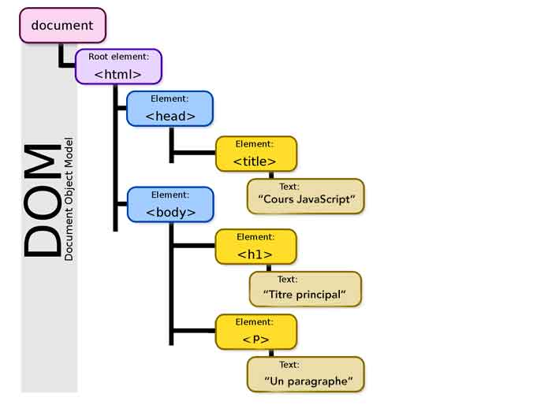

Standardisation des pages
grâce au DOM (Document Object Model)

Le DOM (Document Object Model) est un standard pour représenter et manipuler des documents HTML et XML en tant qu'arborescence d'objets dans un programme informatique. Il a été développé par le World Wide Web Consortium (W3C) en 1998 pour permettre aux développeurs de créer des applications Web interactives en manipulant le contenu, la structure et le style des documents HTML ou XML à l'aide de scripts côté client (JavaScript, par exemple). Le DOM permet également aux navigateurs Web de gérer de manière cohérente le contenu des pages Web, ce qui contribue à la standardisation des pages Web et à la compatibilité entre les différents navigateurs.
←